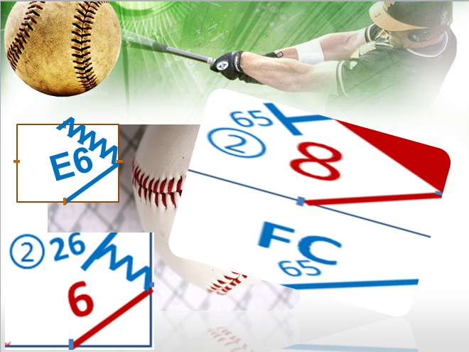
Simbologías en la Anotación
No existe un estándar aprobado ni mucho menos registrado para anotar usando tales símbolos, pero si es de gran importancia emplear ciertos símbolos y abreviaturas para llevar dicho juego de Béisbol. Anotar un juego de béisbol es apasionante, apasionante, es hacer arte, por tal razón la simbologías empleada en las hojas de anotación de cada juego de béisbol hace que la misma se convierta en una belleza natural del juego.
A continuación te presentamos los símbolos usados para anotar un juego de beisbol, recordar que cada símbolo o abreviatura va a depender del país o sistema empleado, en nuestro caso usa el Sistema Latino Americano
Como se registran los out en la hoja de anotación
Para graficar o codifica una jugada de out hay que tomar en cuenta el numero de la posición del jugador de la defensiva que actuó o actuaron para realizar al out. Siempre hay que hacer notar el número de out que van en la entrada o inning
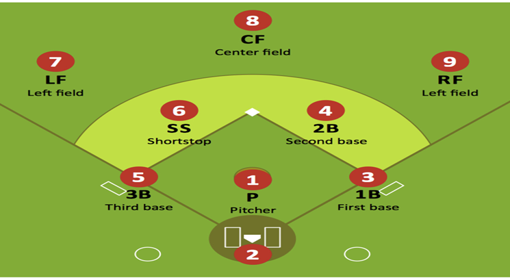
Podemos apreciar el número de la posición que le corresponde a cada defensor en campo de Béisbol, para fines de codificar las jugadas que se presentan.
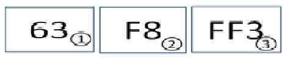
Todos los batazo de rodados y fly se registran con tinta de color NEGRA
Bateador corredor es Out
- Out(1) Roletazo al campo corto y se completa el out en la primera base.
- Out(2) Batazo de elevado en Fly que atrapa el jardinero central.
- Out(3) Batazo de elevado en Fout fly que atrapa el primera base .
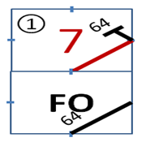
Juagada de Force Out
Force Out: es una jugada en la que se pone out o fuera a un corredor el cual está obligado a avanza a una base siguiente.
- Un corredor en la primera base.
- El bateador corredor conecta roletazo al campo corto.
- El campo corto hace out forzando al corredor de primera base, el cual estaba obigado avanzar hacia la segunda base.
- El bateador corredor llega safe a primera base.
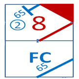
Jugada de Fielder’s Choice
Es una jugada de selección en la que el defensor tiene la opción de elegir a cual corredor hacer out o poner fuera, dicho corredor no está obligado a avanzar, además que se presentan avances de corredores por Fielder’s Choice( FC) o bola ocupada.
- Con corredor en la segunda base.
- El bateador conecta roletazo al campo corto.
- El campo corto selecciona hacer out al corredor de segunda, por la via (6-5) tirando al tercera base, el corredor no estaba obligado avanzar.
Los diferentes Hits
Un hits es una batazo conectado tan fuerte o tan débil que el jugador de la defensa no pueda atrapar ni haciendo un esfuerzo extraordinario y que dicho bateador corredor alcance una o más base.
Como se registran los batazos de Hits
Se registran con el color ROJO
Es importante destacar que siempre que el bateador corredor alcance un hit, el anotador debe de colocar el numero de la posicion hacia donde conecto tal batazo que se acredita como un imparable.
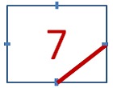
Hit Sencillo
Bateador corredor alcanza una base con su prodio esfuerzo.
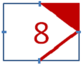
Hit Double
Bateador corredor alcanzar dos bases con su propie esfuerzo.
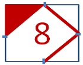
Hit Triple
Bateador corredor alcanza tres bases con su propio esfuerzo.
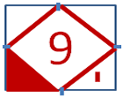
Hit Home Run
Bateador corredor alcanza cuatros bases y se apunta una impulsada.
Como se registran los Errores
Se registran con el color AZUL
Los errores se comenten dentro de la defensa, los infielder y oufielder cometen errores tanto de fildeo como de tiro de la pelota, permitiendo asi que el bateador corredor se embase o que algunos corredores alcancen bases extras.
Error una base
Error en tiro a la inicial del tercera base.
Error de dos base
Bateador corredor alcanzar dos bases por error del Center Field.
Error de tres base
Bateador corredor alcanzar tres bases por error del Center Field.
Error de cuatro base
Bateador corredor alcanza cuatros bases por error del jardinero Derecho.
Otras Jugadas que se registran con color AZUL
Se registran con el color AZUL
Son esos turnos que terminan en BASE POR BOLA, SACRIFICIO, GOLPEADO POR UN LANZAMIENTO, INTERFERENCIAS DEL RECEPTOR.
Base Robada
El corredor de la primera base alcanza safe la segunda base. Si se presenta un rondown tratando de poner out al corredor y este alcanza la base también es base robada aun cuando se le escape la bola a un defensor por tiro del recepto, ameno que este no alcance una base extra.
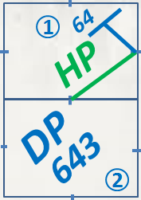
Doble Play
Dos Out retirado por la defensa.
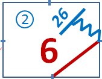
Out Intendo de Robo
en esta ocasión el corredor de primera base intenta llegar safe a la segunda base y es puesto out con un disparo del receptor. También es out si es sorprendido por el lanzador, si ocurre un ron Down debe de registrarse todos los participante en dicha jugada.
Ponche y Wild Pitch
Ponchado y alcanza la primera base por lanzamiento salvaje del lanzador Wild Pitch. Generalmente en esta jugada ocurre cuando el bateado abanica un tercer strike que el receptor no pudo retener el lanzamiento y el bateador corredor alcanza la primera base.
Ponche y Passed Ball
En caso de ser un passed ball, en un tercer strike. En esta ocasión el receptor no pudo retener el lanzamiento con su mano enguantada y lo que resulta un passed ball, y por ende no es responsabilidad del pitcher de que este bateador corredor anotase, se considera carrea sucia.
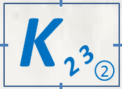
Ponchado, Out del Receptor a Primera
Ponchado y es puesto out, del receptor a la primera base. Este ponche comúnmente se realiza cuando con dos out el bateador abanica un tercer strike y el receptor no puede retener la bola y tiene que completar la jugada realizando un tiro a la primera base.
Como se registran los Turnos no Oficiales
Se registran con el color VERDE
Son esos turnos que terminan en BASE POR BOLA, SACRIFICIO, GOLPEADO POR UN LANZAMIENTO, INTERFERENCIAS DEL RECEPTOR.
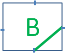
Base por Bolas
El lanzador realiza cuatro picheo fuera de la zona de strike en el turno de un bateador.
Base por Bolas Intencional
El lanzador realizar cuatro pircheo de manera intencional fuera de la zona de strike (Regla Modificada).
Hit by Pitch
El bateador es golpeado por un lanzamiento desviado del lanzador.
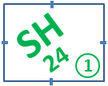
Sacrificio de Toque
El bateador toca la bola y logran avanzar uno o varios corredores con menos de dos out.
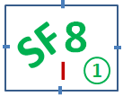
Sacrificio de Flay
El bateador conecta un elevado manejado por la defenza y un corredor de tercera base logra anotar con menos de dos out.
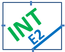
Inteferencia del Receptor
El receptor interfiere con el bate del bateador y se le obtorga la primera base.
Componentes
A continuación te presento los componentes fundamentales y esenciales que debe de conocer a fondo cualquier personalidad, para lograr convertirte en un anotador, ya sea como aficionado, para ayudar a un club de beisbol en particular o si más bien deseas ser un anotador a gran escala.
El Anotador Oficial
Es el encargado de llevar el registro de todas las jugadas de un juego de béisbol. Es la única autoridad que podrá tomar decisiones de criterio, tales como,
La Hoja de Anotación
Es un instrumento ordenado sistemáticamente para registrar todas las incidencias ocurridas durante un juego de beisbol, así como también todos...
Herramientas Usada
Aquí te presento las principales herramientas que debe de tener y conocer un anotador oficial de beisbol y cualquier anotador de afición al juego,
Simbologías Usada
No existe un estándar aprobado ni mucho menos registrado para anotar usando tales símbolos, pero si es de gran importancia emplear ciertos símbolos.
Nuestro Portfolio
En esta seccion presentamos algunas de las fotos e imagenes que hacen referencias a nuestro trabajos como anotador oficial de Beisbol, de hecho es importante ver la vella y el arte que se esconde destras de esta labor profesional.


{kind=link}
{kind=link}
{kind=link}
{kind=link}
{kind=link}
{kind=link}
Testimonials
De manera fundamental es importante destacar La función primordial del anotador oficial que es la de llevar la anotación completa de un juego de beisbol, y por consiguientes tenemos a varios de los anotadores de latinoamerica expresando su testimonio sobre lo que conlleva ser un anotador de Beisbol.
 “Para este trabajo se necesita de mucha concentración, no perder un lanzamiento. Ver, más la experiencia que uno tiene, le permite saber lo que está pasando.”
“Para este trabajo se necesita de mucha concentración, no perder un lanzamiento. Ver, más la experiencia que uno tiene, le permite saber lo que está pasando.”


Arturo Santo Domingo
Primer Latino; Anotador Oficial - MLB
El Anotador es el responsable de plasmar lo sucedido en el terreno de juego, su decisiones se harán historia y por lo tanto se requiere de mucha objetividad.

Gil Reyes
Anotador Oficial (LVBP)
Cumplir con esta labor es un inmenso privilegio para quienes sentimos pasión por este deporte, debido a que nos permite estar en contacto directo con el juego de beisbol y formar parte del mismo.

Francsico Baez
Anotador Oficial (DSL & LIDOM)
El anotador oficial es el responsable de registrar, evaluar y otorgar en cada acción durante el juego apegado a lo que le faculta la regla de Beisbol.

Milton E. Reyes
Anotador Oficial (LIDOM)
En el juego de Béisbol todas las partes son muy importantes pero no hay dudas que el anotador es una pieza muy importante en la historia de este juego.

Orlando Diaz
Presidente (DSL)
Call To Action
Duis aute irure dolor in reprehenderit in voluptate velit esse cillum dolore eu fugiat nulla pariatur. Excepteur sint occaecat cupidatat non proident, sunt in culpa qui officia deserunt mollit anim id est laborum.
Contact Us
Porque eres importante para nosotros y nos honra con saber que estas documentándote y actualizándote en querer ser un anotador de Beisbol o más bien como aficionado, aquí te dejamos nuestros contactos. Ponte en contacto con nosotros.